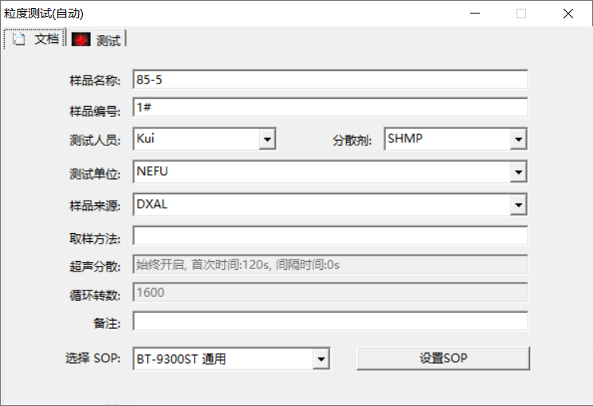

2 仪器使用
下载配套软件及驱动，将仪器和电脑连接。随即检查仪器的硬件功能，打开软件，依次点击进水，循环，超声，自动清洗按钮。
检查仪器状态
点击粒度测试(自动)，填写基本信息，SOP选择BT-9300ST 通用 (Figure 2.1)；

Figure 2.1: 基本信息。其中，分散剂SHMP代表六偏磷酸钠，土壤前处理步骤中使用了该分散剂。
接着，我们每次测定前都须关注测试界面的参数值 (Figure 2.2)：
- 背景值范围，约在1.4~2.2；
- 测试窗污染度，约在0.9~1.5；
- 系统状态：正常；
- 二维坐标X轴上的绿色信号小于10，图形大小逐渐变小；

Figure 2.2: 自动粒度测试，测试界面
确认仪器状态正常后
点击启动。将自动进水、消泡、测背景值。
当提示加入样品时，再向池中加入（摇匀的）土壤溶液，将自动调整遮光率、自动超声分散、自动测试与保存结果、自动清洗。
这里需要注意的是，加入的样液只需几毫升，适量加入，使遮光率蓝条落在绿色区间即可！
使用完后，排干净循环池中的水，点击一次开始排水，再点一次停止排水。将白色手帕塞入循环池，放置壁周受到污染。